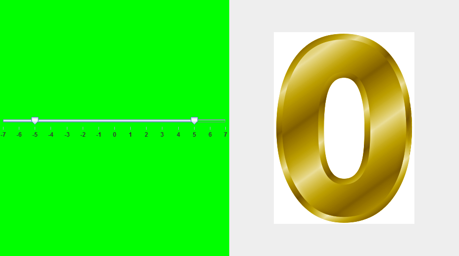
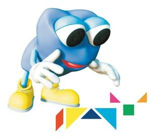
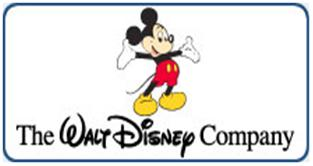
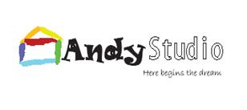

Magic Zero
This is a novel on-going project. This design is to use embodiment-interaction approach to better teach children to conceptualize zero. A symmetry concept between positive and negative number introduced in this project. The first stage of the project is created in a Java-based platform.
What I brought to the table:
Cognitive-sciences Embodied/Enactive approach, Java Programming Skills, Design-Based Learning
What I learned
While analyzing my device throughout my design and development stages, I discovered that students of different grades focused on different elements. For example, preschool kids are more concerned about the real objects, and higher level students focus more on the number itself and inner problem-solving analysis. I began to pay close attention to the cognitive factors that influenced the different levels of learning for various demographic backgrounds. It became clear to me that the way children learn new things is actually very different from how the current educator learned and the ways in which they were cultivated. The fact that children notice symmetry among the zero, and related positive and negative numbers means that they have at least a qualitative assertion of what this means. As a researcher, I am using this rudimentary notion as a means of supporting their understanding of the learning objective (positive vs. negative numbers). Also, we need to engage students to build and use their hands in order to interact with the learning materials instead of the traditional class lecture approach.
Research demo:
Expanded Kinect-based research demo:
The Beauty of English Language (TBEL)
What I brought to the table:
Language Learning Expert, interaction design, human behavior knowledge, flexible and creative thinking, a sense of humor.
What I learned?
Designed “The Beauty of English Language” (TBEL) Instructional Projects by analyzing learners’ motivation, entry test scores and classroom performances, etc. Integrate the origin of English language and increase learners’ interest and passion in language learning. Activate the learning attitudes and effectiveness by role-play and small group seminar, etc. TBEL provides a platform for interactive environment of learning and teaching for learners at a variety of ages. We purposefully keep student – centered surroundings appealing to both genders and provided random props and settings to allow for more creative exploration.
Project Overview (Go to Official Website of ONLY Education )
Come on: HAHA
What I brought to the table:
Interaction with children, Media project management, Program design, photography.
What I learned
How to promote and facilitate the brand image of HAHA Children TV Channel by creating and designing HAHA merchandises such as the bookmarker, table calendar, poster and watch, etc. with the producer, director and production team. Learning goal & Target market, Design & implementation considerations for audiences. Come on: HAHA is a TV program built in partnership with different primary schools in Shanghai to teach 8-14 year olds how to be more brave, persistent, passionate, agile and intelligent. It is designed to encourage learning through interaction as well as create a sense of education and fun so it has been standing out in a children-oriented educational program.
Project Overview (Go to Official Website of HAHA TV)
Disneyland: a Wonderland in the Globalized World

What I brought to the table
Organization, User experience, Audio design, Quantitative analysis, Oration and public-speaking.
What I learned?
Analyzed the history and development of the worldwide affection of Disneyland for children by using plots and charts and factor analysis on the data we collected. Designed and processes and resources of the Disneyland as a Wonderland in the Globalized World based on ASSURE Model. Developed and promoted the influence and positive image of Disneyland in the group of students at Fudan University and around areas. Chaired an all-girl team, well coordinated and balanced their contradictory opinions during the process of preparation. And gave the presentation named The Disneyland as a Wonderland in the Globalized World, finally won standing ovation and made the Disneyland image more popular in the college students’ mind.
Presentation & Project Overview
Self-made Audio-lingual Instructional Materials for my Students
What I brought to the table
Multimedia editing, Professional narration, Bilingual in English-Chinese, Creative thinking.
So, right now you just click on the links below and take a listen:
About Andy Studio
Chinese Learning Podcast
Background infromation of Text 5 US Dept. of Education
Kite Surfing